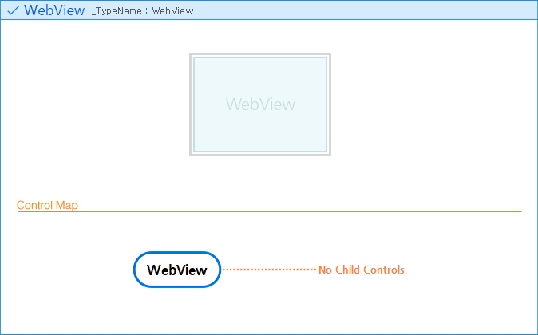

|
|
| WebView |
|
|
|
|
 |
Supported Environments |
|
|
| [Desktop] |
 |
| Nexacro Runtime Environment (NRE) |
 |
Windows |
|
macOS |
| Web Runtime Environment (WRE) |
|
Edge |
|
Chrome |
|
Safari |
|
Firefox |
|
Opera |
|
| [Mobile] |
| Nexacro Runtime Environment (NRE) |
|
Android |
|
iOS/iPadOS |
| Web Runtime Environment (WRE) |
|
Android Default Web Browser |
|
iOS/iPadOS Default Web Browser |
|
|
|
|
|
Description |
|
|
WebBrowser is a component that loads web pages and displays them on the screen. |
|
|
|
Remark |
|
|
- In the Windows operating system NRE, the WebBrowser component will operate based on Microsoft WebBrowser Control. For this reason, there may be limitations in displaying content that does not support Internet Explorer. To overcome these limitations, the WebView component in the Windows OS NRE is designed to operate based on Microsoft Edge WebView2 Control.
- Some of the functions supported by component-based control changes are different from the WebBrowser component.
Unsupported methods (setProperty, getProperty, callMethod)
Newly added methods (goBack, goForward, callScript)
- In the Windows OS NRE, if Microsoft Edge WebView2 Control is not installed on the user PC, an Environment onerror event will occur.
The errortype property value of the ErrorEventInfo object is "ObjectError," and the errormsg property value will return an installation guidance message.
- In order for the web accessibility function to operate properly within the WebBrowser component, the virtual cursor function must be used.
It is recommended that the information message regarding the virtual cursor function be displayed when the selection box is moved to the WebBrowser component or closed.
To display accessibility when the select box is moved or closed, you must use the accessibilityaction and accessibilityleavemessage properties.
◆ macOS NRE Constraints
- To use the WebBrowser component in macOS NRE
In the info section of the Xcode project, the "App Transport Security Settings > Allow Arbitrary Loads" value must be set to "YES."
◆ Mobile NRE Constraints
- When the window.open method is executed on a page loaded in the WebBrowser component, the Nexacro in-app browser will be displayed as a popup.
Windows that are open can be closed by touching the close button on the top left corner.
You can use the window.opener property to exchange data between pages loaded from the WebBrowser component and pages loaded from the Nexacro in-app browser. |
|
|
|
Structure |
|
|
 |
|
|
|
Constructor |
|
|
|
|
WebView.init( strName, vLeft, vTop , vWidth, vHeight [, vRight, vBottom, [vMinWidth, [vMaxWidth, [vMinHeight, [vMaxHeight]]]]] )
|
|
| Parameters |
Type |
Description |
| strName |
String |
It sets the ID of a WebView in the form of a string. |
| vLeft |
String, Number |
It specifies the value of the left property of a WebView in pixel or percent (%).
* When you include a base component in the argument:
If you use a pixel as an unit, this parameter will be determined based on the right property of the base component.
If you use a percentage (%) as an unit, this parameter will be determined based on the width property of the base component. |
| vTop |
String, Number |
It specifies the value of the top property of a WebView in pixel or percent (%).
* When you include a base component in the argument:
If you use a pixel as an unit, this parameter will be determined based on the bottom property of the base component.
If you use a percentage (%) as an unit, this parameter will be determined based on the height property of the base component. |
| vWidth |
String, Number |
It specifies the value of the width property of a WebView in pixel or percent (%).
* When you include a base component in the argument:
If you use a pixel as an unit, this parameter will be specified in pixel while the base component will be ignored.
If you use a percentage (%) as an unit, this parameter will be determined based on the width property of the base component. |
| vHeight |
String, Number |
It specifies the value of the height property of a WebView in pixel or percent (%).
* When you include a base component in the argument:
If you use a pixel as an unit, this parameter will be specified in pixel while the base component will be ignored.
If you use a percentage (%) as an unit, this parameter will be determined based on the height property of the base component. |
| vRight |
String, Number |
It specifies the value of the right property of a WebView in pixel or percent (%).
This parameter will be ignored if both the vLeft and vWidth parameters are all specified.
* When you include a base component in the argument:
If you use a pixel as an unit, this parameter will be determined based on the left property of the base component.
If you use a percentage (%) as an unit, this parameter will be determined based on the width property of the base component. |
| vBottom |
String, Number |
It specifies the value of the bottom property of a WebView in pixel or percent (%).
This parameter will be ignored if both the vTop and vHeight parameters are all specified.
* When you include a base component in the argument:
If you use a pixel as an unit, this parameter will be determined based on the top property of the base component.
If you use a percentage (%) as an unit, this parameter will be determined based on the height property of the base component. |
| vMinWidth |
String, Number |
It specifies a WebView's minimum width that can be displayed in the Form. |
| vMaxWidth |
String, Number |
It specifies a WebView's maximum width that can be displayed in the Form.
If this value is smaller than vMinWidth, it will be replaced by the value of vMinWidth. |
| vMinHeight |
String, Number |
It specifies a WebView's minimum height that can be displayed in the Form. |
| vMaxHeight |
String, Number |
It specifies a WebView's maximum height that can be displayed in the Form.
If this value is smaller than vMinHeight, it will be replaced by the value of vMinHeight. |
Sample Call:
var objComp = new WebView();
objComp.init( "WebView00", 30, 120, 196, 46 );
objComp.init( "WebView00", 30, 120, 196, 46, null, null );
objComp.init( "WebView00", null, null, 300, "400px", "80%", 300 );
objComp.init( "WebView00", 0, 0, 200, 100, null, null, 300, 500, 200, 500 );
objComp.init( "WebView00", "WebView22:10", 300, null, null, "WebView33:10", "20%", 300, 500, 200, 500 ); |
|
|
|
// Create Object
var objWebView = new WebView();
objWebView.init("WebView", 30, 120, 196, 46, null, null);
objWebView.init("WebView", null, null, 300, "400px", "80%", 300);
or
var objWebView = new WebView("WebView", 30, 120, 196, 46, null, null);
var objWebView = new WebView("WebView", null, null, 300, "400px", "80%", 300);
// Add Object to Parent Form
this.addChild("WebView", objWebView);
// Insert Object to Parent Form
this.insertChild(1, "WebView", objWebView);
// Remove Object form Parent Form
this.removeChild("WebView");
// Show Object
objWebView.show();
// Destroy Object
objWebView.destroy();
objWebView = null;
|
|
|
|
|
Property |
|
|
| Name |
Description |
| accessibilityaction |
This property sets the action information to be included as the audio output target of the screen reader according to the accessibilitydescreadtype property when moving the selection box to the WebView. |
| accessibilitydesclevel |
This property is used to determine whether to print accessibility features of the children when a selection box moves to a WebView. |
| accessibilitydescription |
This property sets the description information to be included as the audio output target of the screen reader according to the accessibilitydescreadtype property when moving the selection box to the WebView. |
| accessibilityenable |
This property is used to determine whether to print the values of accessibility-related properties when a selection box moves to a WebView. |
| accessibilitylabel |
This property sets the label information to be included as the audio output target of the screen reader according to the accessibilitydescreadtype property when moving the selection box to the WebView. |
| accessibilityleavemessage |
This property sets the information to be included as the audio output target of the screen reader before the selection box is moved from the WebView component to another component. |
| accessibilityrole |
This property sets the role information read by the screen reader when the selection box is moved to the WebView. |
| bottom |
This property is used to set the bottom coordinate value for displaying the WebView. |
| cssclass |
This property is used to set the style of a WebView by using a class defined in the relevant XCSS file.
|
| enable |
This property is used to determine whether to enable a WebView.
|
| flexgrow |
This property is used to resize the component by dividing the main axis (the horizontal axis, if the type property value is "horizontal" and the vertical axis if the type property value is "vertical") margin within the layout container by the specified ratio. |
| flexshrink |
This property is used to readjust the size of the components by the ratio specified so that they do not exceed the container area when they are placed on the main axis (the horizontal axis, if the type property value is "horizontal" and the vertical axis if the type property value is "vertical") within the layout container. |
| height |
This property is used to set the height for displaying the WebView. |
| id |
This property is used to set the identification of a WebView. |
| initvalueid |
This property is used to set the ID of an InitValue to be applied to an WebView. |
| layoutorder |
This property is used to set the order in which components are aligned on the main axis (the horizontal axis, if the type property value is "horizontal" and the vertical axis if the type property value is "vertical") within the layout container. |
| left |
This property is used to set the left coordinate value for displaying the WebView. |
| maxheight |
This property is used to set the maximum height of a WebView for the component to be displayed on the screen. |
| maxwidth |
This property is used to set the maximum width of a WebView for the component to be displayed on the screen. |
| minheight |
This property is used to set the minimum height of a WebView for the component to be displayed on the screen. |
| minwidth |
This property is used to set the minimum width of a WebView for the component to be displayed on the screen. |
| name |
This property is used to specify the name of a WebView. |
| -nexa-border |
This property is used to set the border of a WebView. |
| parent |
This read-only property holds the parent object of a WebView. |
| positionstep |
This property is used to specify the index number of a step page where a WebView is displayed if the parent object uses the step feature.
|
| right |
This property is used to set the right coordinate value for displaying the WebView. |
| tablecellarea |
This property is used to set the area where the component is aligned within the virtual table cell area in the layout container. |
| taborder |
This property is used to define the tab order number of a WebView. Tab order means the order of moving focus among components when the focus is moved by entering the tab key. |
| tabstop |
This property determines whether a WebView receives focus when you move the focus between components by pressing the tab key.
|
| top |
This property is used to set the top coordinate value for displaying the WebView. |
| url |
The attribute to set the URL of the webpage to be displayed on the WebView component. |
| useurlhistory |
The attribute to set whether to use the History function when the url attribute of the Webview component is changed. |
| visible |
This property is used to determine whether to make a WebView visible or not. |
| width |
This property is used to set the width for displaying the WebView. |
|
|
|
|
Method |
|
|
| Name |
Description |
| addEvent |
This method is used to declare a certain event and then add it to a WebView. |
| addEventHandler |
This method is used to add a handler to a certain event of a WebView. |
| addEventHandlerLookup |
This method is used to find a function and add it to a certain event of a WebView as a handler. |
| bringToFront |
This method is used to cause a WebView to be displayed at the top on the screen. This method applies to among the components under the same parent.
|
| bringToPrev |
This method is used to cause a WebView to be displayed one level higher on the screen. This method applies to among the components under the same parent.
|
| callScript |
The method to execute the script delivered from the loaded webpage to the parameter. |
| clearEventHandler |
This method is used to delete all the event handlers registered in a certain event. |
| destroy |
This method is used to delete a WebView that is dynamically created through a script. |
| findEventHandler |
This method finds a handler in a certain event of a WebView and returns the index of the handler. |
| getEventHandler |
This method returns a specific handler from a certain event of a WebView by specifying the index number of the handler. |
| getOffsetBottom |
This method is used to obtain the bottom position of a WebView in pixel, based on the parent component's top side. |
| getOffsetHeight |
This method is used to obtain the height of a WebView in pixel. |
| getOffsetLeft |
This method is used to obtain the left position of a WebView in pixel, based on the parent component's left side. |
| getOffsetRight |
This method is used to obtain the right position of a WebView in pixel, based on the parent component's left side. |
| getOffsetTop |
This method is used to obtain the top position of a WebView in pixel, based on the parent component's top side. |
| getOffsetWidth |
This method is used to obtain the width of a WebView in pixel. |
| getPixelBottom |
This method returns the value of a WebView's bottom property in pixel. |
| getPixelHeight |
This method returns the height of a WebView in pixel. |
| getPixelLeft |
This method returns the value of a WebView's left property in pixel. |
| getPixelRight |
This method returns the value of a WebView's right property in pixel. |
| getPixelTop |
This method is used to obtain the top position of a WebView in pixel, based on the parent component's top side. |
| getPixelWidth |
This method returns the width of a WebView in pixel. |
| goBack |
Goes to the previous page if there is a previous page history. |
| goForward |
Goes to the next page if there is a next page history. |
| init |
This method is used to initialize a WebView after creating it in a script dynamically. |
| insertEventHandler |
This method is used to add a handler to a certain event of a WebView at a specified position. |
| move |
This method is used to change the position and size of a WebView. |
| moveToNext |
This method is used to cause a WebView to be displayed one level higher on the screen than the component delivered as an argument. In this situation, those two components must share the same parent.
|
| moveToPrev |
This method is used to cause a WebView to be displayed one level lower on the screen than the component delivered as an argument. In this situation, those two components must share the same parent. |
| reload |
This method is used to refresh the web page currently displayed in the WebView component. |
| removeEvent |
This method is used to remove a certain event that is declared in a WebView. |
| removeEventHandler |
This method is used to remove a handler in a certain event of a WebView. |
| removeEventHandlerLookup |
This method is used to find a handler in a certain event of a WebView and remove it. |
| resize |
This method is used to change the size of a WebView.
|
| sendToBack |
This method is used to cause a WebView to be displayed at the bottom on the screen. This method applies to among the components under the same parent.
|
| sendToNext |
This method is used to cause a WebView to be displayed one level lower on the screen. This method applies to among the components under the same parent.
|
| setEventHandler |
This method is used to change the first handler in a certain event of a WebView. |
| setEventHandlerLookup |
This method finds a function and uses it to replace the first handler in a certain event of a WebView. |
| setOffsetBottom |
This method is used to specify the bottom position of a WebView in pixel, based on the parent component's top position.
|
| setOffsetHeight |
This method is used to specify the height of a WebView in pixel.
|
| setOffsetLeft |
This method is used to specify the left position of a WebView in pixel, based on the parent component's left position. |
| setOffsetRight |
This method is used to specify the right position of a WebView in pixel, based on the parent component's left position.
|
| setOffsetTop |
This method is used to specify the top position of a WebView in pixel, based on the parent component's top position. |
| setOffsetWidth |
This method is used to specify the width of a WebView in pixel. |
| show |
This method is used to display a WebView on the screen. The WebView mentioned here refers to the one that is dynamically created through a script. |
|
|
|
|
Event |
|
|
| Name |
Description |
| ondevicebuttonup |
The event occurring when clicking the device button from mobile. |
| onloadcompleted |
The event occurring when the webpage is loaded in the WebView. |
| onmove |
This event occurs when the position of a WebView changes. |
| onsize |
This event occurs when the size of a WebView changes. |
| onusernotify |
The event occurring when delivering information from the webpage loaded on the WebView component toward Nexacro. |
|
|
|
|
Status |
|
|
| Name |
Type |
Description |
| disabled |
status |
This is the status in which a component is disabled. |
| mouseover |
status |
This is the status in which a mouse cursor hovers over a component or a certain item of the component. |
| focused |
status |
This is the status in which a component has focus. |
| enabled |
status |
This is the status in which a component is enabled. |
|
|
|